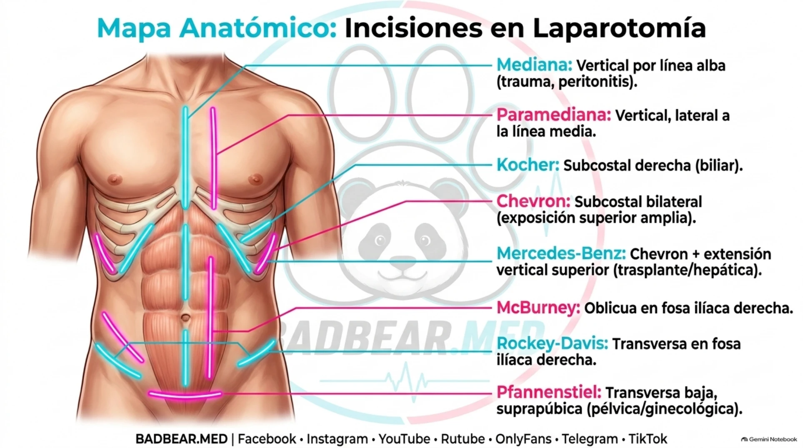
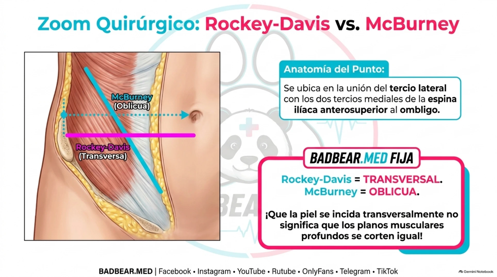

Incisiones de laparotomía: anatomía, exposición y Rockey-Davis
Mediana, Kocher, Chevron, Pfannenstiel y abordajes de apendicectomía.
Qué se busca al elegir una incisión
Laparotomía significa apertura de la cavidad abdominal. La incisión debe dar exposición suficiente para identificar y tratar la enfermedad, permitir ampliación si cambia el hallazgo y reducir lesión innecesaria de músculos, vasos y nervios. El sitio depende del órgano, la urgencia, la extensión esperada y operaciones previas.
La pared contiene piel, tejido subcutáneo, planos musculoaponeuróticos, fascia transversalis, grasa extraperitoneal y peritoneo. La disposición no es idéntica en la línea media, región lateral y pelvis: no existe una lista universal de músculos que se atraviesan en toda laparotomía.
Las incisiones principales
| Incisión | Orientación | Aplicación y consideración |
|---|---|---|
| Mediana | Vertical por línea alba | Exploración, trauma y peritonitis. Rápida y ampliable; no atraviesa los vientres musculares. |
| Paramediana | Vertical lateral a línea media | Acceso seleccionado, menos habitual; exige manejar vaina y relación con recto. |
| Kocher derecha | Subcostal derecha | Exposición hepatobiliar abierta. Atraviesa planos musculares y puede afectar elementos neurovasculares. |
| Chevron | Subcostal bilateral | Exposición amplia del abdomen superior. |
| Mercedes-Benz | Chevron más extensión media superior | Acceso ampliado en determinadas operaciones hepáticas. |
| McBurney | Oblicua en fosa ilíaca derecha | Apendicectomía abierta con separación muscular. |
| Rockey-Davis | Transversa próxima al punto de McBurney | Apendicectomía abierta. |
| Pfannenstiel | Transversa suprapúbica | Acceso pélvico. Piel y aponeurosis transversas; separación de rectos en línea media. |
La dirección cutánea no implica que todos los planos profundos se abran en esa misma dirección. La incisión de Kocher abdominal tampoco debe confundirse con la cervical utilizada en cirugía tiroidea. [1]

Qué debe explicarse al señalar el mapa
La línea media permite ampliar hacia distintos territorios. La subcostal ofrece exposición superior, mientras la suprapúbica se dirige a pelvis. Los dibujos reúnen varias incisiones en una sola pared: no significan que deban hacerse simultáneamente ni que su longitud real sea idéntica. La elección final depende de órgano, constitución y extensión de la enfermedad.
Rockey-Davis: nombre, punto y planos
El nombre correcto es Rockey-Davis. Su rasgo identificador es la incisión cutánea transversa en fosa ilíaca derecha, cercana al punto de McBurney. Este punto se ubica en la unión del tercio lateral y los dos tercios mediales de la línea entre espina ilíaca anterosuperior derecha y ombligo.
Tras piel y tejido subcutáneo se accede a los planos aponeuróticos. Los músculos oblicuo interno y transverso se separan habitualmente siguiendo sus fibras, en lugar de asumir una sección transversal completa de toda la pared. Se abre el plano peritoneal para acceder al ciego y apéndice.
Las tenias del ciego convergen en la base apendicular y ayudan a localizarla. El punto superficial no garantiza que la punta del apéndice esté allí: la posición retrocecal, pélvica y otras variantes cambian la exposición. [2]

El punto de McBurney se calcula sobre la línea EIAS derecha-ombligo y orienta la base apendicular; no asegura la ubicación de su punta. Si el apéndice es retrocecal o existe un plastrón, cambia la facilidad de exposición. Una piel transversa no implica sección transversa de toda la musculatura. Separar fibras y reconocer cada plano ayuda a reducir daño innecesario.
Límites, ampliación y complicaciones
Una incisión localizada puede ser adecuada para una apendicitis accesible, pero limitar la exploración en enfermedad extensa. Peritonitis difusa, diagnóstico incierto o necesidad de otros procedimientos pueden justificar acceso más amplio. La elección depende del cuadro; perforación no obliga automáticamente a una sola incisión en todo paciente.
La infección de herida, dehiscencia y hernia incisional dependen de contaminación, estado nutricional, obesidad, cicatrización y técnica de cierre, entre otros factores. El cierre resistente depende del plano fascial, no solamente de una piel bien aproximada. En incisiones laterales se deben respetar vasos y nervios para evitar sangrado o denervación de la pared.
Repaso y bibliografía
Material visual y audio de la rotación
Abrir el repaso ilustrado completo · 14 páginas · Escuchar el audio de tricobezoares e imagen abdominal.